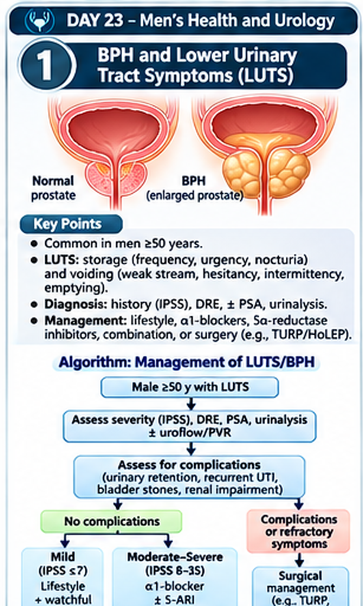
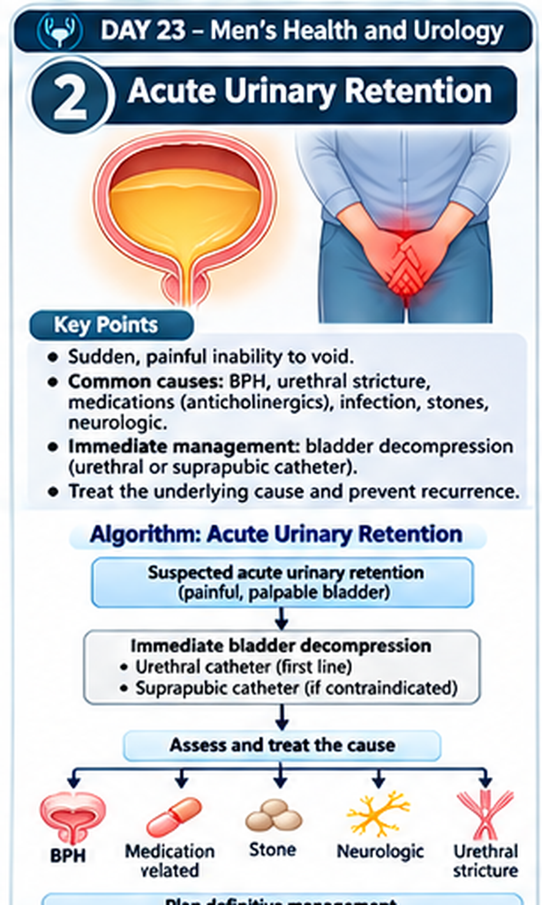
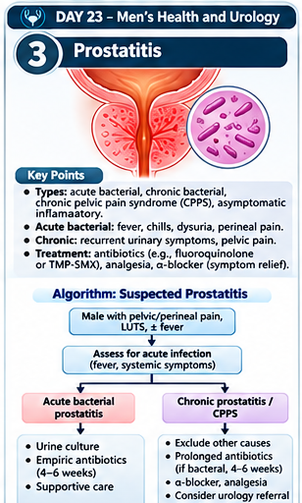
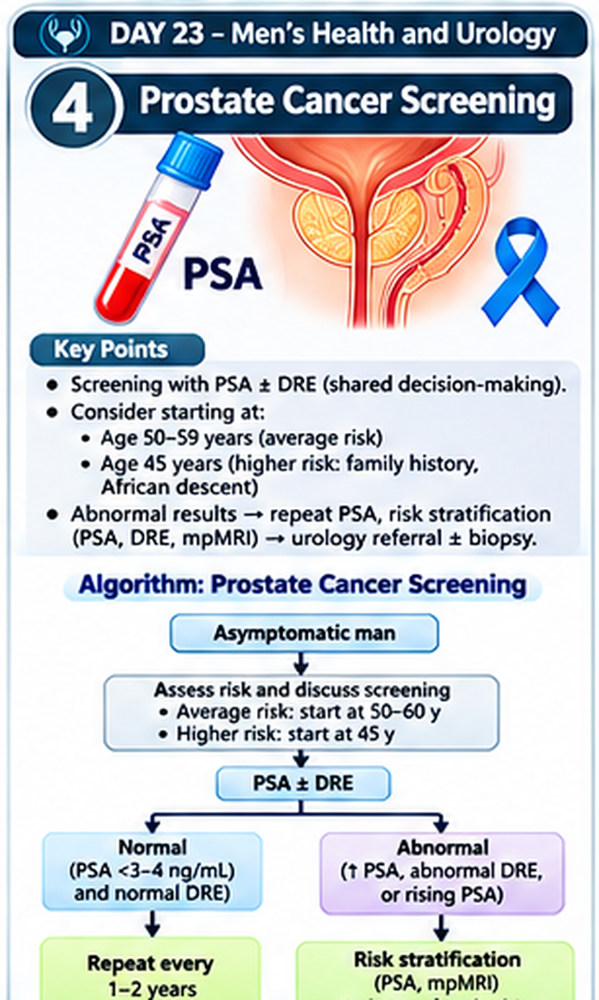
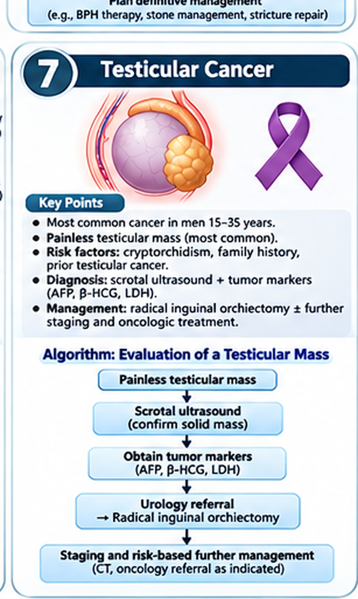
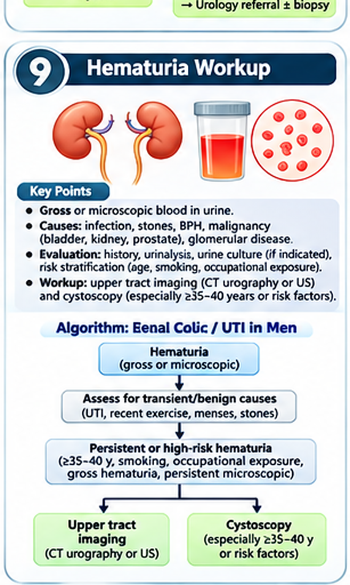

Day 23 — Men’s Health & Urology
Physician-level DOH exam review of BPH/LUTS, acute urinary retention, prostatitis, prostate cancer screening, testicular torsion, epididymitis, testicular cancer, erectile dysfunction, hematuria, and renal colic/UTI in men. Each topic includes deep notes, one of the new Day 23 visuals, 10 original clinical questions, rapid review and academic references.
BPH and lower urinary tract symptoms (LUTS)
BPH is a common age-related cause of LUTS, but LUTS are not synonymous with BPH: rule out infection, malignancy, stricture, neurologic bladder, stones, and medication effects.
Recognition & severity
- Storage symptoms: frequency, urgency, nocturia; voiding symptoms: hesitancy, weak stream, intermittency, straining; post-micturition: incomplete emptying/dribbling.
- Use the IPSS: 0–7 mild, 8–19 moderate, 20–35 severe; always ask about quality-of-life burden.
Evaluation
- History, medication review, urinalysis, DRE; PSA only when it will change management after shared decision-making.
- Check post-void residual, creatinine, uroflow or ultrasound selectively when retention, complications, or diagnostic uncertainty are present.
Treatment
- Mild/nonbothersome: lifestyle and watchful waiting.
- α1-blocker gives rapid symptom relief. 5-α-reductase inhibitor is useful with enlarged prostate and lowers progression/retention risk over months.
- Combination therapy is appropriate for bothersome LUTS plus enlarged prostate/high progression risk.
Urgent referral / complications
- Recurrent retention, recurrent UTI, bladder stones, gross hematuria, hydronephrosis/renal impairment, abnormal DRE or suspected malignancy, refractory symptoms.
🖼️ Study visual — BPH and lower urinary tract symptoms (LUTS)
Open the visual after reviewing the physician-level notes.
Rapid review
High-yield exam recall.
Guidelines & academic sources
For Abu Dhabi licensing questions, use current DoH standards when a topic-specific local standard exists; otherwise rely on current evidence-based specialty guidance.
My additions / weak points
Acute urinary retention
Acute urinary retention is a urologic emergency: decompress the bladder, identify the precipitant, monitor after drainage, and plan a trial without catheter or definitive treatment.
Immediate management
- Confirm painful inability to void with a distended bladder; assess ABCs, pain, hemodynamics and neurologic red flags.
- Immediate urethral catheterization is first-line unless urethral injury is suspected; use suprapubic drainage if urethral access is contraindicated or unsuccessful.
Find the cause
- Common causes: BPH, medications (anticholinergics, opioids, decongestants), infection/prostatitis, urethral stricture, stones, neurogenic bladder, postoperative retention.
- Urinalysis/culture, creatinine/electrolytes and focused imaging as indicated.
Post-decompression
- Monitor for post-obstructive diuresis, hematuria, hypotension and electrolyte abnormalities in high-volume/chronic obstruction.
- Start an α-blocker when BPH is suspected and consider a trial without catheter after several days if clinically appropriate.
🖼️ Study visual — Acute urinary retention
Open the visual after reviewing the physician-level notes.
Rapid review
High-yield exam recall.
Guidelines & academic sources
For Abu Dhabi licensing questions, use current DoH standards when a topic-specific local standard exists; otherwise rely on current evidence-based specialty guidance.
My additions / weak points
Prostatitis
Differentiate acute bacterial prostatitis, chronic bacterial prostatitis, chronic pelvic pain syndrome, and asymptomatic inflammatory prostatitis because workup and treatment differ substantially.
Acute bacterial prostatitis
- Abrupt fever, chills, dysuria/frequency, perineal/suprapubic pain and tender boggy prostate.
- Obtain urinalysis and culture; blood cultures/CBC if systemically ill. Do not perform vigorous prostate massage.
- Systemically ill patients may require IV antibiotics, admission and abscess evaluation.
Chronic bacterial prostatitis
- Recurrent UTI or pelvic/perineal symptoms for ≥3 months; culture localization testing may be useful.
- Fluoroquinolones have good prostatic penetration; typical duration is 4–6 weeks, tailored to culture and resistance.
Chronic pelvic pain syndrome
- Chronic pain without proven bacterial infection; use multimodal symptom-directed therapy rather than repeated empiric antibiotics.
🖼️ Study visual — Prostatitis
Open the visual after reviewing the physician-level notes.
Rapid review
High-yield exam recall.
Guidelines & academic sources
For Abu Dhabi licensing questions, use current DoH standards when a topic-specific local standard exists; otherwise rely on current evidence-based specialty guidance.
My additions / weak points
Prostate cancer screening
Prostate cancer screening is preference-sensitive: use shared decision-making and PSA-based risk assessment rather than a single universal threshold.
Screening principles
- Use shared decision-making, considering age, life expectancy, family history, ancestry and germline risk.
- AUA/SUO uses PSA as the first screening test; a newly elevated PSA should be repeated before biomarkers, MRI or biopsy.
Who may start earlier
- Average-risk screening is generally discussed in midlife; higher-risk patients may start earlier (e.g., Black ancestry, strong family history, germline mutations such as BRCA2).
Abnormal PSA pathway
- Confirm PSA, exclude transient causes, then use risk calculators/reflex biomarkers and multiparametric MRI to improve biopsy selection.
- Suspicious MRI or persistent high risk → urology referral and targeted/systematic biopsy as indicated.
🖼️ Study visual — Prostate cancer screening
Open the visual after reviewing the physician-level notes.
Rapid review
High-yield exam recall.
Guidelines & academic sources
For Abu Dhabi licensing questions, use current DoH standards when a topic-specific local standard exists; otherwise rely on current evidence-based specialty guidance.
My additions / weak points
Testicular torsion
Testicular torsion is a time-critical surgical emergency. High clinical suspicion should trigger immediate urologic exploration without delaying for imaging.
Classic presentation
- Sudden severe unilateral scrotal pain, nausea/vomiting, high-riding or transverse testis and absent cremasteric reflex.
- Adolescents are classic, but torsion can occur at any age.
Imaging decision
- If exam is classic/high suspicion: do not delay surgery for ultrasound.
- Doppler ultrasound is appropriate when diagnosis is uncertain and imaging will not delay definitive care.
Definitive management
- Urgent scrotal exploration, detorsion and bilateral orchiopexy. Nonviable testis requires orchiectomy.
- Manual detorsion may be a temporizing maneuver while preparing for surgery but does not replace exploration.
🖼️ Study visual — Testicular torsion
Open the visual after reviewing the physician-level notes.
Rapid review
High-yield exam recall.
Guidelines & academic sources
For Abu Dhabi licensing questions, use current DoH standards when a topic-specific local standard exists; otherwise rely on current evidence-based specialty guidance.
My additions / weak points
Epididymitis
Epididymitis usually presents with gradual unilateral pain and epididymal tenderness; always distinguish it from testicular torsion first.
First question: could this be torsion?
- Sudden severe pain, high-riding testis, absent cremasteric reflex, or nausea/vomiting → urgent torsion pathway.
Workup
- Urinalysis + culture and first-void urine NAAT for gonorrhea/chlamydia when appropriate.
- Ultrasound if diagnosis is uncertain, symptoms are severe/atypical, or there is concern for torsion, abscess or mass.
Treatment
- Young/sexually active: cover chlamydia and gonorrhea according to current STI guidance.
- Older men or urinary-tract risk: cover Enterobacterales guided by culture/local resistance.
- Supportive care: NSAIDs, scrotal elevation, rest; treat partners when STI-related.
🖼️ Study visual — Epididymitis
Open the visual after reviewing the physician-level notes.
Rapid review
High-yield exam recall.
Guidelines & academic sources
For Abu Dhabi licensing questions, use current DoH standards when a topic-specific local standard exists; otherwise rely on current evidence-based specialty guidance.
My additions / weak points
Testicular cancer
A painless solid intratesticular mass is testicular cancer until proven otherwise; evaluation and surgery must avoid transscrotal biopsy.
Recognition
- Typically affects younger men; common presentation is a painless testicular mass or heaviness.
- Risk factors include cryptorchidism, prior testicular cancer, family history and impaired fertility.
Workup
- Scrotal ultrasound confirms an intratesticular solid lesion.
- Obtain tumor markers AFP, β-hCG and LDH before orchiectomy; normal markers do not exclude cancer.
Management
- Urgent urology referral and radical inguinal orchiectomy; avoid transscrotal biopsy because it disrupts lymphatic drainage and staging.
- Stage with cross-sectional imaging and risk-stratify pathology.
🖼️ Study visual — Testicular cancer
Open the visual after reviewing the physician-level notes.
Rapid review
High-yield exam recall.
Guidelines & academic sources
For Abu Dhabi licensing questions, use current DoH standards when a topic-specific local standard exists; otherwise rely on current evidence-based specialty guidance.
My additions / weak points
Erectile dysfunction
ED is a symptom and cardiovascular risk marker. Evaluate reversible causes before treatment and understand PDE5-inhibitor safety.
Evaluation
- Medical, sexual and psychosocial history; focused vascular/genital/neurologic exam; medication review.
- Morning total testosterone should be measured; screen selectively for diabetes, lipids and other cardiovascular risks.
First-line therapy
- Lifestyle modification, management of vascular risk factors and PDE5 inhibitors unless contraindicated.
- Correct use matters: appropriate timing, sexual stimulation and dose titration.
Contraindications / escalation
- Do not combine PDE5 inhibitors with nitrates because of profound hypotension risk.
- Persistent ED may require vacuum device, intracavernosal therapy, prosthesis or specialist evaluation.
🖼️ Study visual — Erectile dysfunction
Open the visual after reviewing the physician-level notes.
Rapid review
High-yield exam recall.
Guidelines & academic sources
For Abu Dhabi licensing questions, use current DoH standards when a topic-specific local standard exists; otherwise rely on current evidence-based specialty guidance.
My additions / weak points
Hematuria workup
Hematuria evaluation is risk-stratified. Confirm true microscopic hematuria and distinguish glomerular disease from urologic malignancy risk.
Definitions
- AUA defines microhematuria as ≥3 RBC/HPF on a properly collected urine specimen.
- Do not diagnose microhematuria by dipstick alone; confirm microscopy.
Risk-based evaluation
- Low/negligible risk: repeat urinalysis within 6 months rather than immediate cystoscopy/imaging.
- Intermediate risk: cystoscopy + renal ultrasound.
- High risk: cystoscopy + axial upper-tract imaging (typically CT urography when suitable).
Important pearls
- Anticoagulation does not remove the need for appropriate hematuria evaluation.
- After UTI or another benign cause, repeat urinalysis after treatment/resolution.
- Proteinuria, dysmorphic RBCs or casts suggest medical renal disease → nephrology plus risk-based urologic assessment.
🖼️ Study visual — Hematuria workup
Open the visual after reviewing the physician-level notes.
Rapid review
High-yield exam recall.
Guidelines & academic sources
For Abu Dhabi licensing questions, use current DoH standards when a topic-specific local standard exists; otherwise rely on current evidence-based specialty guidance.
My additions / weak points
Renal colic / UTI in men
Differentiate uncomplicated stone pain from infected obstruction or systemic UTI, because obstructed infection requires urgent drainage—not just antibiotics.
Renal colic
- Acute colicky flank pain radiating to groin, often with nausea/vomiting and microscopic/gross hematuria.
- NSAIDs are first-line analgesia when appropriate; non-contrast CT is highly sensitive, while ultrasound can reduce radiation in selected patients.
Stone emergency
- Fever/sepsis + obstruction, solitary kidney with obstruction, rising creatinine/anuria, uncontrolled pain/vomiting → urgent urologic assessment.
- Infected obstructed system requires urgent decompression (ureteral stent or nephrostomy) plus antibiotics.
UTI in men
- Obtain urinalysis and urine culture; evaluate for prostatitis, retention, stones or structural disease when clinically indicated.
- Therapy should be culture-directed and account for local resistance; systemic UTI generally requires longer/stronger treatment than simple cystitis.
🖼️ Study visual — Renal colic / UTI in men
Open the visual after reviewing the physician-level notes.
Rapid review
High-yield exam recall.
Guidelines & academic sources
For Abu Dhabi licensing questions, use current DoH standards when a topic-specific local standard exists; otherwise rely on current evidence-based specialty guidance.
My additions / weak points
External QBank tracker
Track your Men’s Health & Urology question performance.